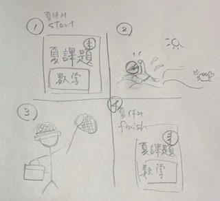
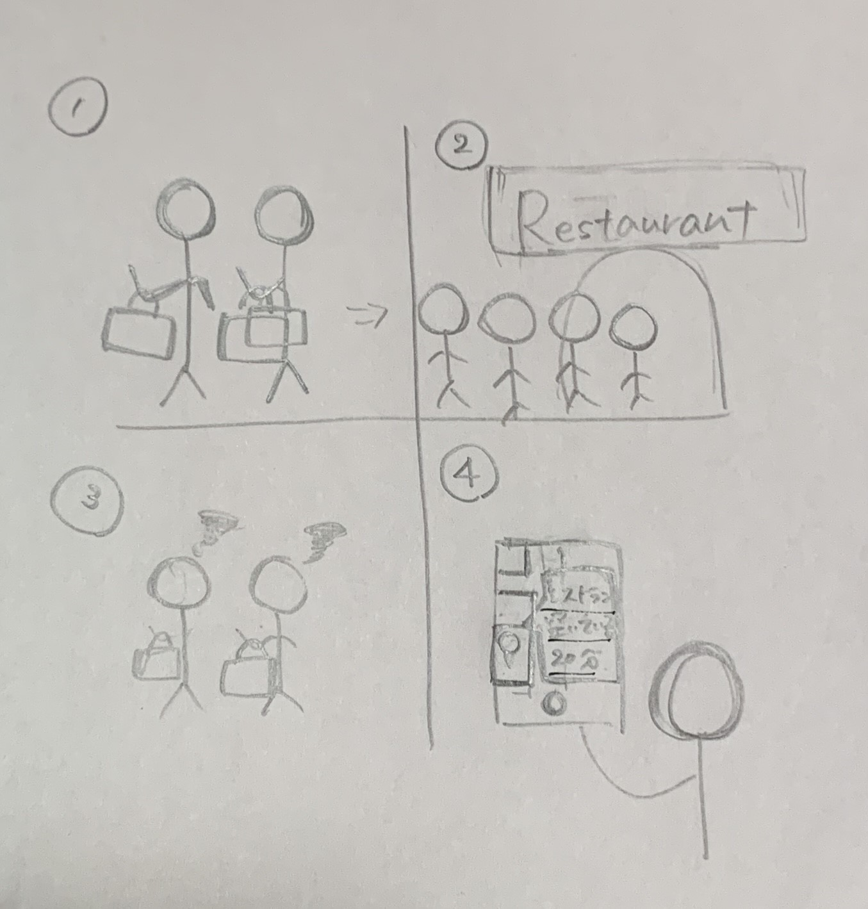

世の中の存在に対する課題の発見
まず一つ目の課題としてあげるのは、夏休みの課題に取り掛かるのが遅くなることや最後までたまっている
人がいること。また長期課題でなくても、課題や自分の勉強に取り掛かるまでの時間や体力において厄介に
感じることがあるのでそれを課題としてあげる。

二つ目は、夏休みの期間や土日は特に、首都圏は混みやすいために行動しずらいと感じることがあった。
そんな時にご飯やショッピングなどカテゴリー別にどこが空いているかと現地からの行き方がわかるような
アプリがほしいと思った。
